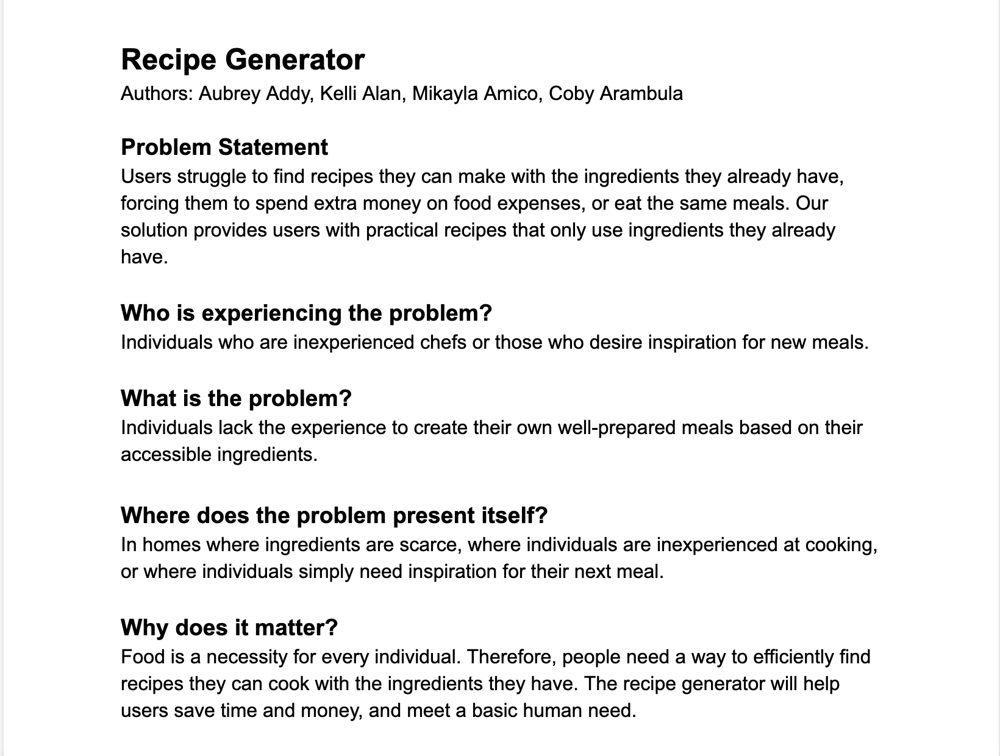
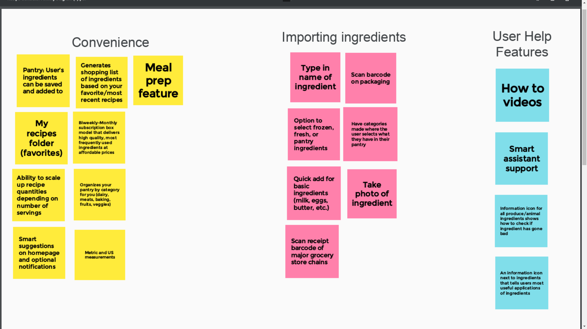
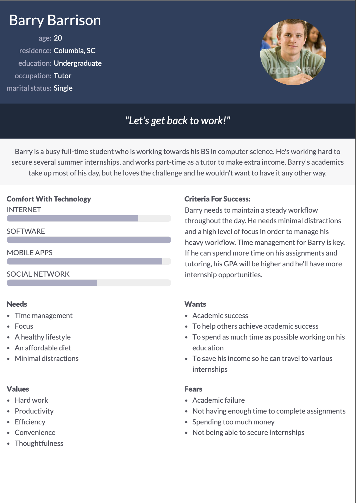
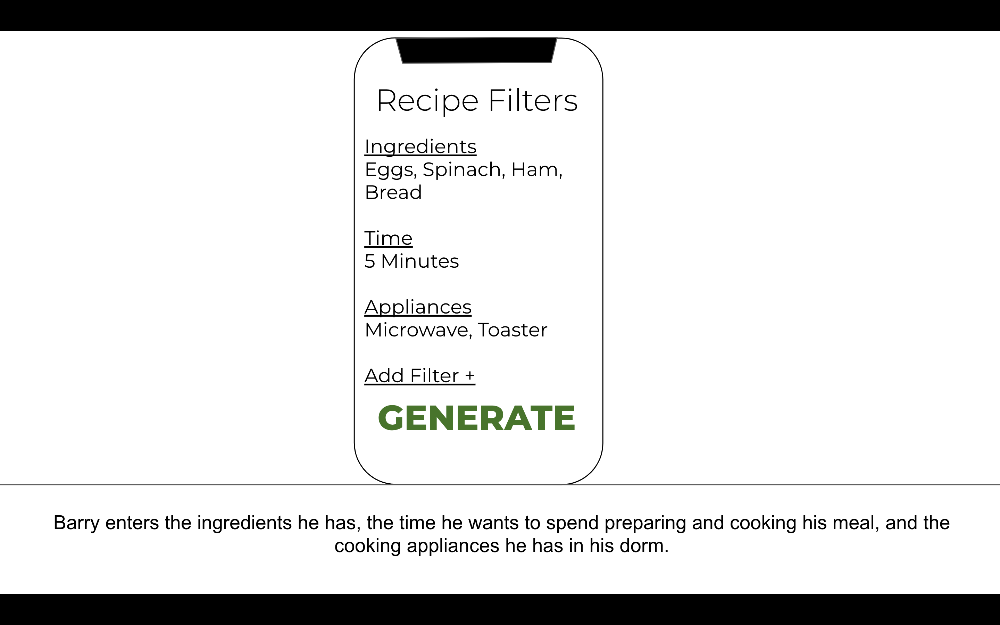
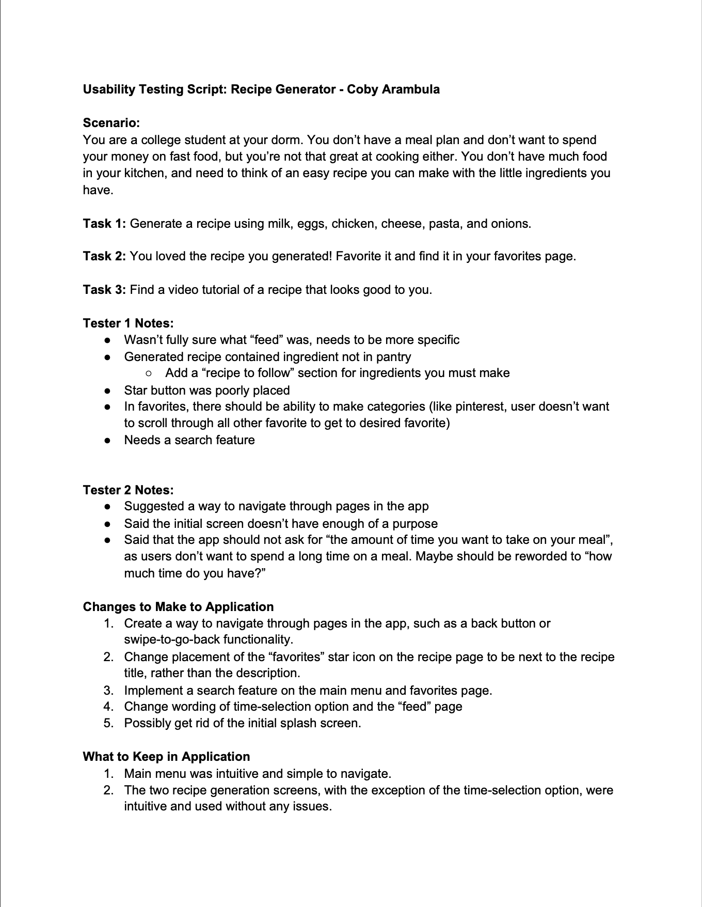
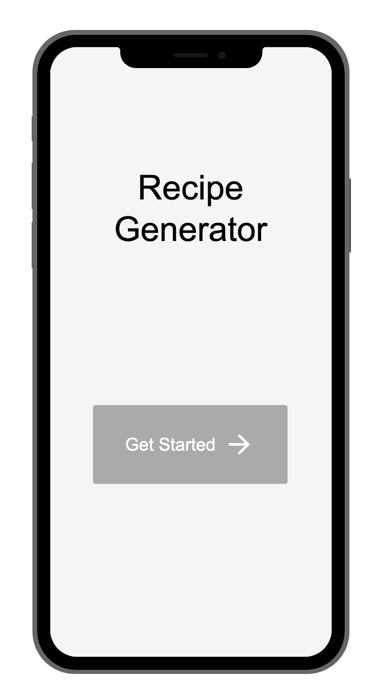
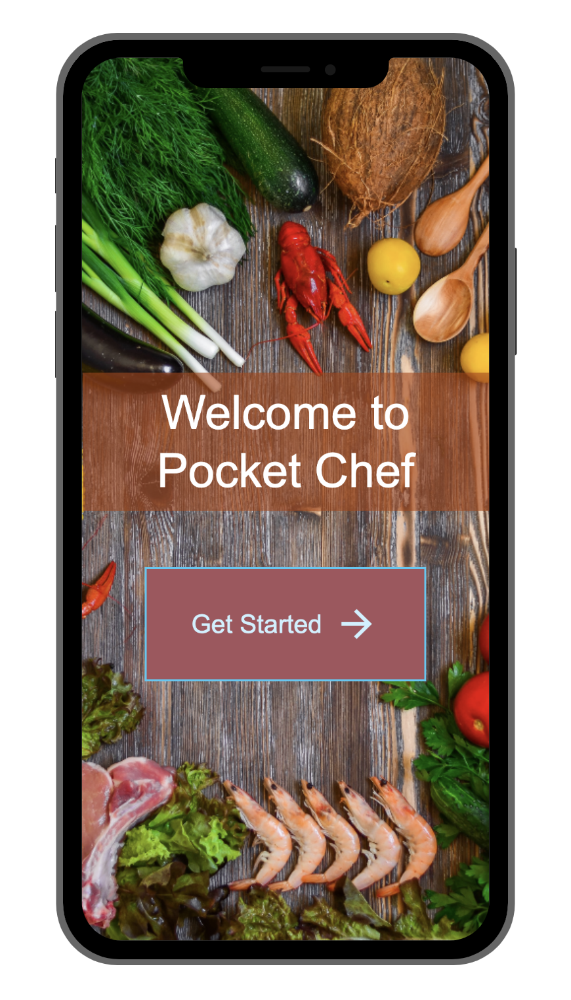

Problem Statement: Recipe Generator
Users struggle to find recipes they can make with the ingredients they already have, forcing them to spend extra money on food expenses, or eat the same meals. Our solution provides users with practical recipes that only use ingredients they already have.
Affinity Diagram: Recipe Generator
Our group brainstormed various features that could be implemented in a Recipe Generating app. These ideas were categorized by convenience, features concerning the importing of ingredients, user help features, various output filters, community features and diet options.
Personna: 4 Personnas for Recipe Generatoring App
A collection of personnas of users that would greatly benefit from using the recipe generatoring app.
StoryBoard: Barry Barrison
A comic strip illustrating an instance in which a college student named Barry would use the Recipe Generator App.
Sketches: Recipe Generator

A document containing various sketches that illustrate potential app formats and implementations, with the first sketch being the most agreed upon and refined.
Paper Prototype: Recipe Generator App

A demonstration of a functional prototype of the Recipe Generator app. The prototype contains accessible screens in the app.
Usability Testing Script: Recipe Generator App
A usability script used by two testers in order to test the functionality of the app prototype. The document contains the script, the user's impressions and comments, and a list of elements to keep and change from the Recipe-Generator prototype.
Low-Fi Prototype: Recipe Generator
A low fidelity prototype of the recipe generator made with the program "Proto.io". The prototype is an interactable demo that includes various screens and functions of the recipe generator app.
Hi-Fi Prototype: Recipe Generator (Pocket Chef)
A high fidelity prototype of the recipe generator app which expands on the lofi prototype. This version of the app prototype, which now has the name "Pocket Chef", includes added functionalty and visuals to replicate an actual user experience.